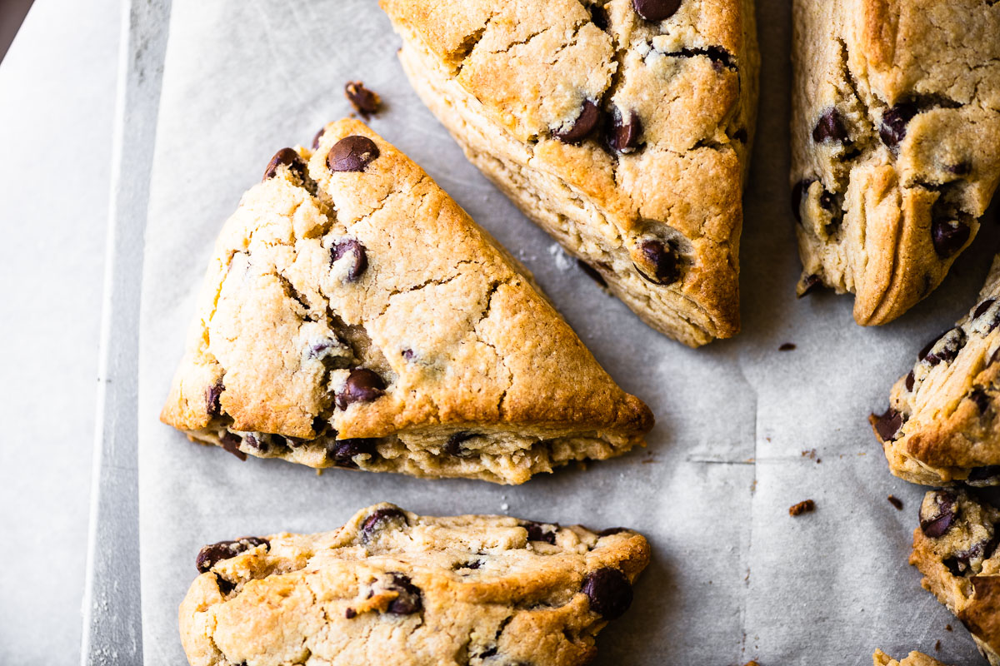

Chocolate Chip Scones

Scones are similar to biscuits because of their flaky layers. They are surprisingly easy to make and don't require too many ingredients. The dry ingredients are all whisked together at first and then the buttermilk is whisked in. The mixture is then shaped into a disc or circle and then cut into 8-10 piece wedges and simply placed into the oven to bake. These scones are great for breakfast or brunch or even as a snack and they pair well with coffee or tea of your choice.
Ingredients
- 2 cups all-purpose flour
- 1/4 cup sugar
- 1¼ tsp. baking powder
- 1/4 tsp. baking soda
- 1/4 tsp. salt
- 1/2 cup unsalted butter, cold
- 1 cup dark chocolate chips
- 3/4 cup buttermilk
- 1 tsp. vanilla extract
Steps
- Preheat oven to 400°F. Whisk together flour, sugar, baking powder, baking soda, and salt in a large bowl.
- Blend the grated butter in with the flour mixture using a pastry cutter or 2 knives. The mixture should be clumpy and look like course crumbs. Mix in the chocolate chips.
- In a small measuring cup, mix together the buttermilk and vanilla. Mix into the flour mixture until JUST incorporated. DO NOT over mix, this will make the scones too dense.
- Put a small amount of flour onto a clean surface and knead the dough briefly. Shape the dough into a circle that is about 1 ½ inches thick. Cut the circle in half and then each half into 4-5 wedges (depending on how big you want your scones).
- Put the wedges on a baking sheet covered with parchment paper. Brush the tops with a little bit of milk and then lightly sprinkle with sugar.
- Bake for 20-22 minutes until tops are golden brown and toothpick inserted comes out clean. Cool on a wire rack and enjoy!